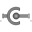

OrientationOrientation type defining rotation from a frame 1 into a frame 2 with quaternions {p1,p2,p3,p0} |
Information
This information is part of the Modelica Standard Library maintained by the Modelica Association.
This type describes the rotation to rotate a frame 1 into a frame 2 using quaternions (also called Euler parameters) according to the following definition:
Quaternions.Orientation Q;
Real n[3];
Real phi(unit="rad");
Q = [ n*sin(phi/2)
cos(phi/2) ]
where "n" is the axis of rotation to rotate frame 1 into frame 2 and "phi" is the rotation angle for this rotation. Vector "n" is either resolved in frame 1 or in frame 2 (the result is the same since the coordinates of "n" with respect to frame 1 are identical to its coordinates with respect to frame 2).
The term "quaternions" is preferred over the historically more reasonable "Euler parameters" in order to not get confused with Modelica "parameters".
Type Information
| Real |
|---|
Used in Components (3)
|  |
Modelica.Mechanics.MultiBody.Joints
Spherical joint (3 constraints and no potential states, or 3 degrees-of-freedom and 3 states) |
|
Modelica.Mechanics.MultiBody.Joints
Free motion joint (6 degrees-of-freedom, 12 potential states) |
|
|
Modelica.Mechanics.MultiBody.Parts
Rigid body with mass, inertia tensor and one frame connector (12 potential states) |